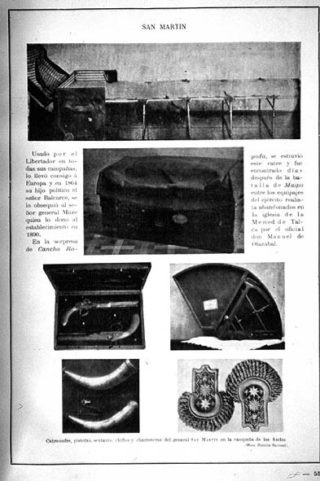

|
|  |
|
Adolfo P. Carranza, Objetos de campaña
|
The Museum also collected (and documented in its catalogues, illustrated journals and books) items of San Martín's and other independence leaders' military campaigns: weapons, uniforms, field beds, saddles, etc., the great majority of which had been donated by the descendants of these 'próceres'. From the family shrine they passed into the shrine of the state, turning from genealogical into national fetishes. Other items, notably the flags and banners of victorious battalions, literally passed from one place of worship –the Cathedral of Buenos Aires– to another, yet in both cases without losing their cultic or fetishistic qualities: the Museum of History was not a place of analysis but of emotion, a relicary of the nation's heroic past.
|